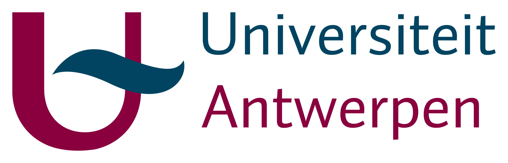

The Corona study is an initiative by UAntwerpen, in collaboration with UHasselt and KU Leuven.
Project initiators:
Koen Pepermans; Philippe Beutels; Pierre Van Damme; Niel Hens.
Statistical coordinator:
Thomas Neyens.
Statistical analysts:
Jonas Crevecoeur; Lisa Hermans; Anna Ivanova; Oluwafemi Olusoji; Maren Vranckx.
App development:
Jonas Crevecoeur; Oluwafemi Olusoji.
In development:
- French support
- Smartphone friendly version
Questions, remarks, and/or suggestions: corona-studie@uantwerpen.be
